Stretch Art — Geometric Figures
Stretch Art — Geometric Figures
Having reached geometric figures, I began with triangles, squares, rhombuses, and their combinations. I explored different combinations of figures whose total number of vertices equalled 22, starting with three — the minimum number of points required to construct a closed figure. For example, 4+3+3+3+3+3+3 or 4+4+4+4+3+3. Initially, this exploration did not involve any restriction on the total area of the construction. Then an additional condition emerged: to divide the entire area of a chosen surface among the figures of a given combination, leaving no remainder. Thus, the exploration concerned not only combinations of figures but also ways of arranging them within a single bounded plane.
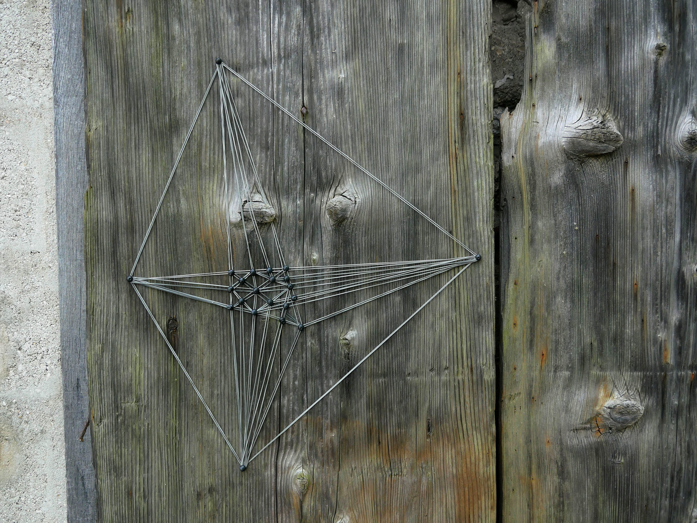
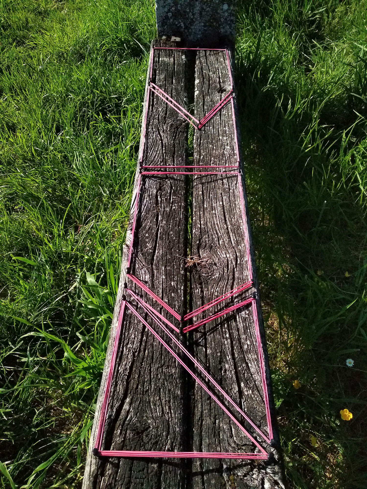

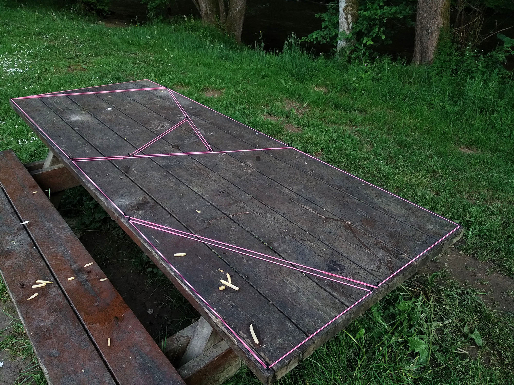
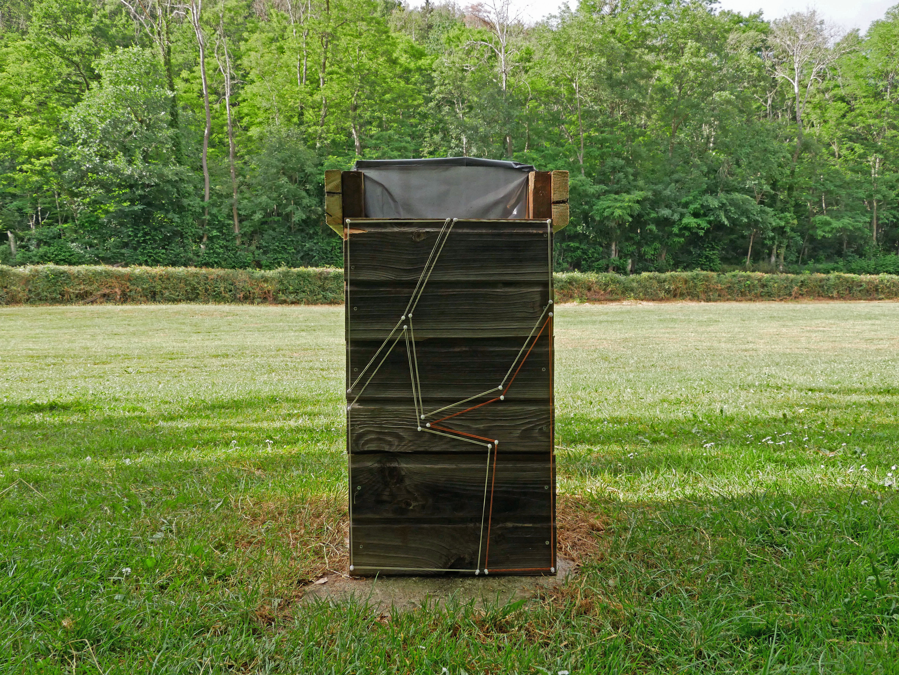
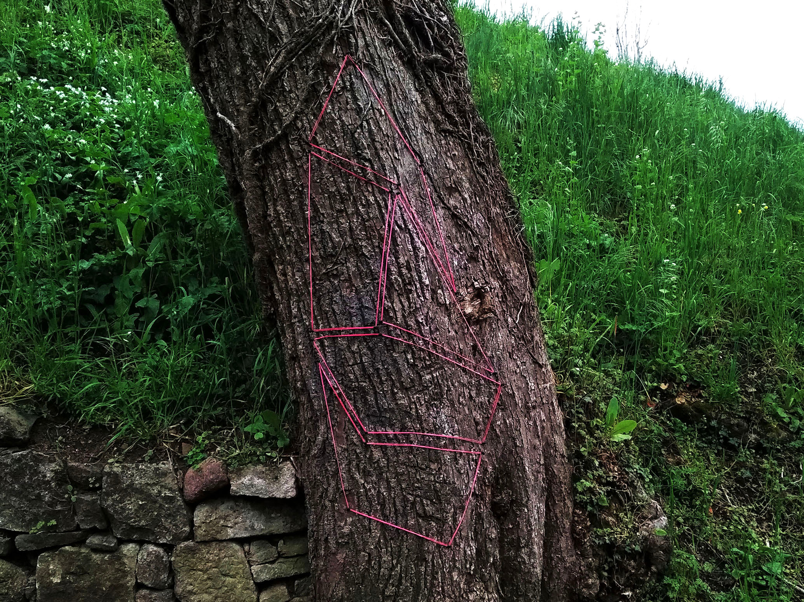
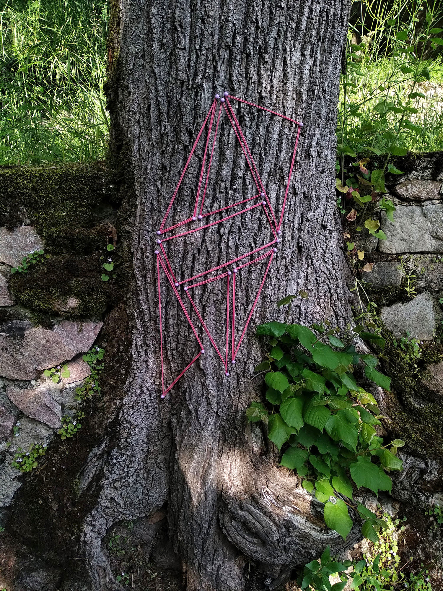
In other cases, I established even stricter rules. For example, 22 points form a grid in which all lines except one remain fixed. As in a sliding puzzle, only this single line can be moved. By exploring its possible positions, I found ten different configurations. Here, the possibilities for change are determined not only by the initial number of points but also by a constraint imposed on the construction itself.
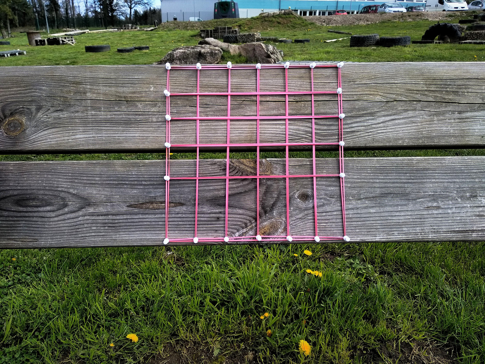
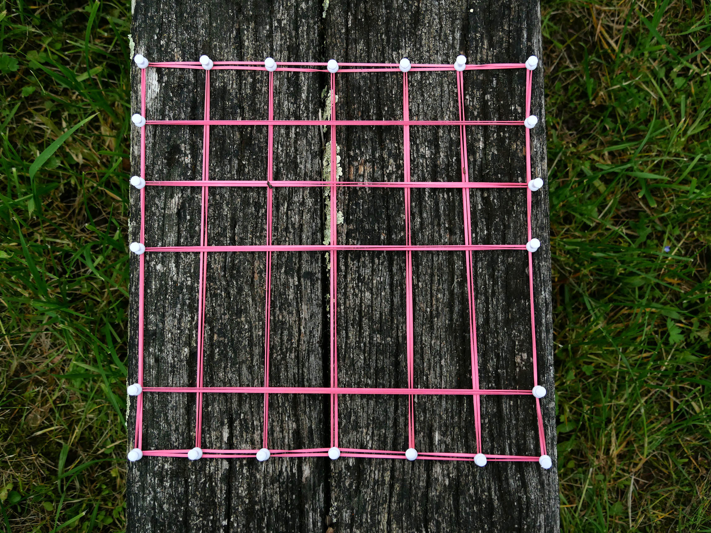
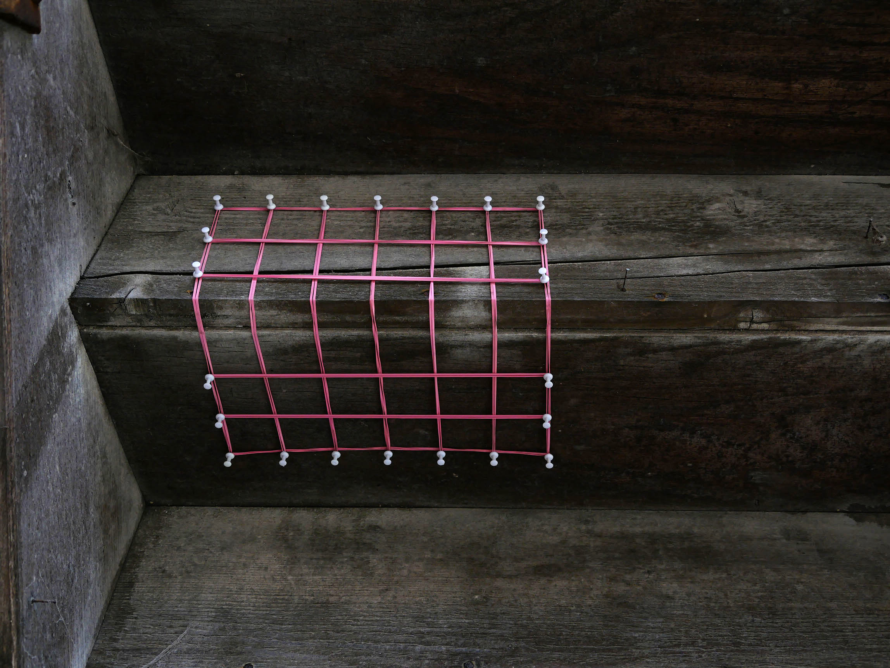
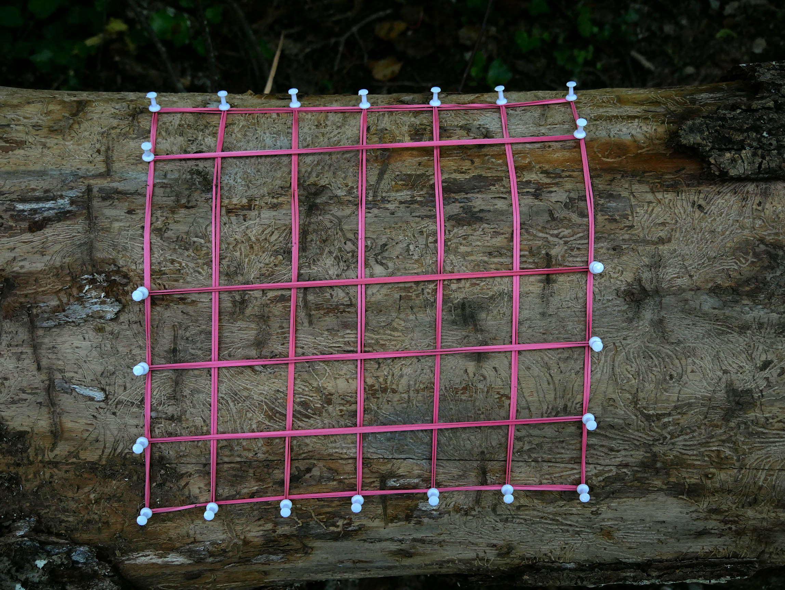
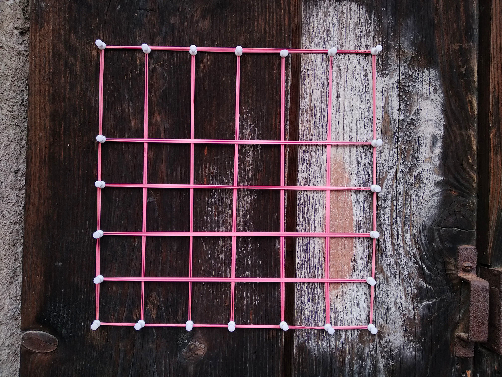